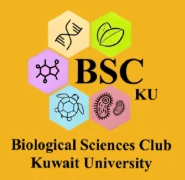
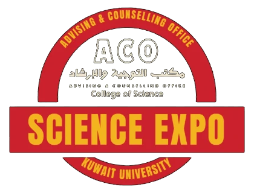

تعرّفوا على تخصصاتنا البايو
خمسة تخصصات في العلوم البيولوجية، كل واحد له طريقه وأسئلته.
FIND YOUR FIELD
Biological Sciences ClubKuwait Universityتفاصيل الدعوة ↗دفنته الأرض 150 مليون سنة.
والحين.. بيطلع لكم.
يدعوكم نادي العلوم البيولوجية ومكتب التوجيه والإرشاد بكلية العلوم إلى جناح الأحياء والعلوم البيئية في معرض العلوم. تعرّفوا على تخصصات البايو والفرص الوظيفية اللي تنتظركم بعد التخرج.

EXHIBIT · BIO & ENVكل عظمة في هالهيكل كانت كائن حي، يتنفس ويتكيّف مع بيئته. في «Science Expo» نفتح لكم باب علوم الحياة والبيئة: من الخلية الصغيرة إلى الأنظمة البيئية الكبيرة، ومن مقاعد الدراسة إلى سوق العمل.
جناحنا مصمّم يجاوب على أسئلتكم عن البايو: شنو ندرس؟ وين نشتغل؟ وليش يهمّنا العالم الحي من حولنا؟
خمسة تخصصات في العلوم البيولوجية، كل واحد له طريقه وأسئلته.
FIND YOUR FIELDوين ممكن توصلك شهادة البايو؟ مختبرات، مستشفيات، بحث، بيئة، وأكثر.
WHERE BIOLOGY TAKES YOUمن الكائنات المنقرضة إلى توازن نظامنا البيئي اليوم.
LIFE, PAST & PRESENT